01
My app, my identity
Write a completely original greeting, choose the symbol that fits you, and try two different color palettes. Which combination feels best?
Turn your laptop into a Flutter development environment
—and launch your first real app in a browser.
By the end of this lab, you'll install the essential developer tools, understand how they connect, experiment with a tiny visual app while your SDK downloads, start the default Flutter app, and provide evidence from your own computer.
Today is not about memorizing Flutter widgets. It's about preparing your workspace and proving it works. We'll explore the code properly in later sessions.
Install VS Code, the Flutter & Dart extensions, the Flutter SDK, and the necessary setup tools.
Check Dart, Flutter Doctor and the available browser targets.
Create a starter Flutter app, run it in Chrome/Edge and save screenshots.
You are assembling several tools. They work together, but each has a
different job.
Learn their roles before clicking Install.
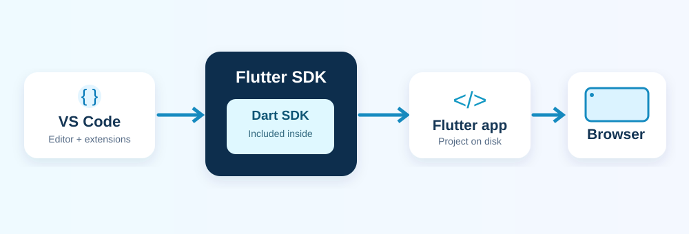
Host OS means the operating system on your development laptop. Target platform means where the finished app will run. Flutter supplies the shared framework, but building for some targets needs their own platform SDK/compiler.
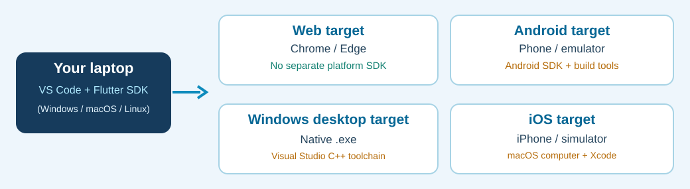
Example: You can develop on Windows 11 and run your Flutter app in Chrome without installing Android Studio. If you later choose a Xiaomi Android phone as the target, install and configure the Android SDK first. We'll walk through that in the optional Android guide.
The workspace where you open projects, write code, use extensions and start debugging.
The framework and command-line tools used to create, build and run Flutter apps.
The Dart compiler and tools. You normally do not install a separate Dart SDK for Flutter.
A supporting tool Flutter uses for SDK downloads, version control and updates. You do not need to learn Git commands today—we will simply install it and check its version.
Make VS Code understand Flutter/Dart commands, syntax, debugging and project tools.
Runs the app while you develop. No Android emulator is needed for the web route.
Choose the right tool for each job. Answering is for practice, not a grade.
Which tool installs Flutter's language support into VS Code?
Preparing the basics now avoids common setup problems later. The instructions mainly follow Windows 11; other OSs have separate tabs in Flutter's official install guide.
git --versionExpected: a Git version number, such as git version x.y.z.
The numbers will vary. If the command is not recognized, install Git and reopen the terminal.
The textbook recommends comfortable hardware, including 8 GB+ RAM, an SSD and ample storage. These are practical recommendations, not universal minimums for web-only Flutter work.
Do not spend time installing a heavy emulator on an ordinary laptop today.
Save this Codelab locally or use its text checklist. Try the on-page mini app playground even without internet, and finish large downloads after class. The playground is a visual simulation, not a Dart compiler.
There are two legitimate ways to get the Flutter SDK: let VS Code download it (recommended), or download the stable SDK ZIP manually and extract it. Choose one route, not both. Both end in the same Flutter SDK folder and PATH configuration.
Download VS Code from the official site ↗. Launch it and press Ctrl + Shift + X to open the Extensions view.
Search for Flutter, choose the extension published by Dart Code, and select Install. It also installs the Dart extension. Verify both show Installed / Enabled.
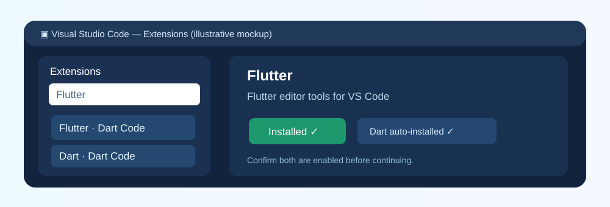
01-vscode-extensions.png.Flutter: New Project and select it.C:\src if you have permission. Choose Clone Flutter.
Important: This session's *first project* is created in Step 07, after verification. If VS Code continues to a project-creation prompt at this point, you may cancel it and return later.
Leave your VS Code download running and explore a tiny app without programming. You can return to this installation step afterward.
This is a valid alternative when you already have an official SDK archive or want direct control of where it is stored. Install the stable Windows SDK ZIP for your machine architecture; don't download a Dart SDK separately.
%USERPROFILE%\develop (for example
C:\Users\Student\develop). Avoid Program Files, folders requiring
administrator access, spaces/special characters, or cloud-synced locations for the SDK.
develop folder, not into an additional nested
flutter\flutter folder.
develop\flutter. Check that it contains a folder called bin. The full
intended location is %USERPROFILE%\develop\flutter\bin.flutter folder, not bin.flutter\bin\flutter.bat. Do not install both copies unless you deliberately manage
multiple SDK versions.PATH is a list of folders your terminal searches when you type commands. Including
Flutter's bin folder makes the flutter and bundled dart commands
available in a new terminal.
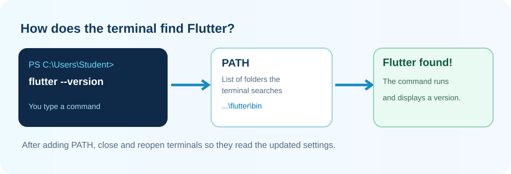
%USERPROFILE%\develop\flutter\bin only if that
is where your SDK is installed. For another location, use its actual flutter\bin
path.flutter --version and dart --version.
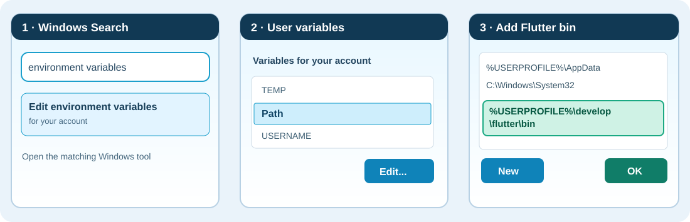
flutter --version
dart --versiondevelop directory. If using VS Code's automatic Add SDK to PATH, don't
add the same path twice.
If not recognized: first restart VS Code and every terminal. Then revisit the SDK PATH step in the official troubleshooting guide; do not copy a stranger's SDK location verbatim.
The Flutter SDK already contains Dart. Seeing the Flutter and Dart extensions in VS Code is not the same as having the actual Flutter SDK installed—that is why we verify next.
Downloads can take a while. Instead of staring at a progress bar, explore a small app visually. Then take a look behind the screen: edit real Flutter source code, press Run, and discover how your changes affect an application. No previous Flutter knowledge is required.
Try changing the colors, greeting and icon, then tap the little app. These are the kinds of interactions you'll create with real Flutter widgets later!
Play with the mini-app below, then experiment with real Flutter code in DartPad. In Step 07, you'll create and run your first app in VS Code.
Every change updates the little app on the right.
Every great app starts with an idea. Make this screen yours!
Try these in any order. You don't need to write a single line of code.
You have explored an app using visual controls. Now discover how developers make changes through code.
Edit the source code and run the real app.
Having trouble loading the editor? Open the example in DartPad
You've explored an app visually. Now discover how developers create and change real Flutter applications through code. You don't need to understand every line yet.
Find the indicated code in DartPad, make one change at a time, press Run, and compare the result with your prediction.
Before changing anything, explore the FocusBoard application and understand what it currently does.
EXPERIMENT ZONE.
Checkpoint: The app runs, displays three tasks, and updates its progress when you complete them.
Start with the simplest possible change: modifying the information displayed by the application.
EXPERIMENT ZONE near
the beginning of the source code.
const studentName = 'Alex';
const focusMessage = 'Make your next 45 minutes count.';Alex with your own name.
Checkpoint: Your name appears in the welcome message, and the focus card displays your new text.
Applications often use shared colors and icons to create a consistent visual identity. Experiment with both.
brandColor and
brandIcon in the Experiment Zone.
const brandColor = Color(0xFF0F766E);
const brandIcon = Icons.school_outlined;const brandColor = Color(0xFF7C3AED);Icons.code_outlined.
Checkpoint: Several visual elements update when the shared brand color changes.
FocusBoard builds its task cards from a list of data. You can change the number of cards without copying the interface code.
tasks list near the top.
];:
StudyTask('Review my Flutter notes', 15),Checkpoint: The task list and progress counter automatically reflect the new number of tasks.
So far, you have changed text, appearance, and data. Now modify how the application responds to a user action.
The problem: When every task is completed, the button becomes disabled. A productivity app should allow the user to restart the plan.
FilledButton.icon
near the bottom of the source code.
onPressed property.
onPressed: completed < tasks.length
? () {
setState(() {
completed++;
});
}
: null,onPressed
logic with a callback that always remains available.
setState(), introduce an
if / else decision.
completed by one.
completed
to zero.
Replace the existing FilledButton.icon
with the following code:
FilledButton.icon(
onPressed: () {
setState(() {
if (completed < tasks.length) {
completed++;
} else {
completed = 0;
}
});
},
icon: const Icon(Icons.check),
label: Text(
completed == tasks.length
? 'Restart my plan'
: 'Complete next task',
),
),
Why it works:
setState() refreshes the interface.
The button completes tasks until the list is finished,
then resets completed to zero.
Test: Complete all tasks, click Restart my plan, and verify that the progress bar resets.
Checkpoint: After completing the final task, the button shows Restart my plan. Clicking it resets progress to zero, and the tasks become unfinished again.
Real dashboards do more than display stored values. They calculate useful information from application data.
Your mission: Display the total study time remaining for all unfinished tasks.
tasks list and the
minutes property of each task.
completed.
This tells you how many tasks are finished.
build() method
inside _FocusBoardScreenState.
return Scaffold(...),
introduce a variable to store the remaining minutes.
Start with this placeholder:
// TODO: Calculate the duration of unfinished tasks.
final remainingMinutes = 0;Column,
add a Text widget below the existing
progress information.
Text(
'$remainingMinutes minutes remaining',
style: const TextStyle(color: Colors.white),
),
The completed tasks come first in the list.
Use skip(completed) to get the
unfinished tasks, then add their durations
using fold().
Step 1: Inside the
build() method, before
return Scaffold(...), add:
final remainingMinutes = tasks
.skip(completed)
.fold<int>(
0,
(sum, task) => sum + task.minutes,
);
Step 2: Inside the focus card's
Column, below the progress
information, add:
Text(
'$remainingMinutes minutes remaining',
style: const TextStyle(color: Colors.white),
),Test: The number decreases as tasks are completed and reaches zero when all tasks are finished.
Checkpoint: The remaining minutes start at the total task duration, decrease after each completion, and reach zero when all tasks are finished.
Finished experimenting? Compare your work with the complete application. Explore its behavior and inspect how the final features were implemented.
You've changed application content, styling, data, and behavior by editing source code. You don't need to memorize the syntax yet. In upcoming lessons, we'll learn how these programming concepts work step by step.
Open Terminal → New Terminal in VS Code. These commands show whether the SDK is installed and whether Chrome/Edge is available as a target.
dart --versionShows the Dart SDK version bundled with Flutter. Use two dashes:
--version.
flutter --versionShows Flutter version and typically its channel. Versions differ across machines.
flutter doctorChecks Flutter and the toolchains for different target platforms.
flutter devicesShows Chrome/Edge if discovered as web devices (and physical devices if connected).
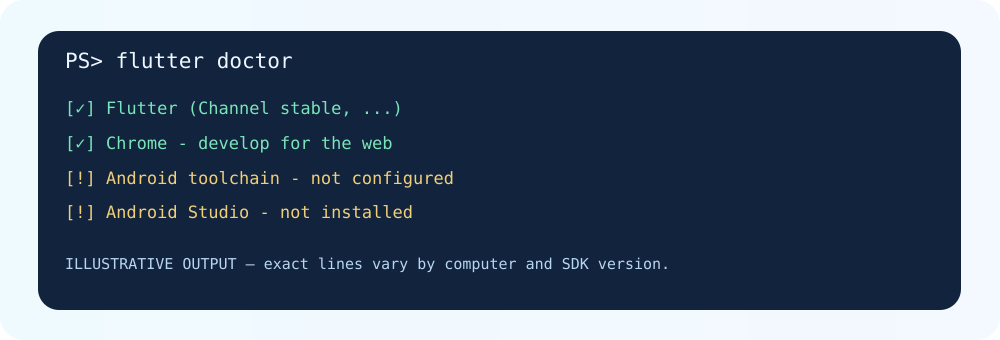
flutter devices, and you can actually run the app in that browser.Your Flutter check shows a successful Flutter installation and Chrome, but a warning that Android Studio is missing. What should you do to finish today's web-first lab?
dart --version, all lines of flutter doctor, and flutter devices.
Show the commands as well as the output.Now we'll use VS Code to generate a real Flutter starter app and run it in Chrome or Edge. This is a setup test: do not change its Dart code today.
Documents\FlutterProjects). VS
Code creates the new project folder for you.setup_check_app as your project name. Use lowercase letters and underscores.pubspec.yaml and
lib/main.dart in the Explorer—no need to edit them yet.
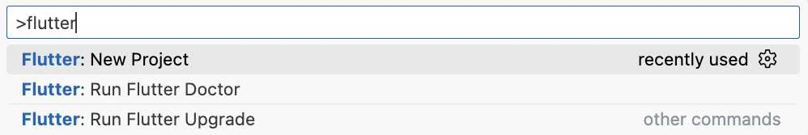
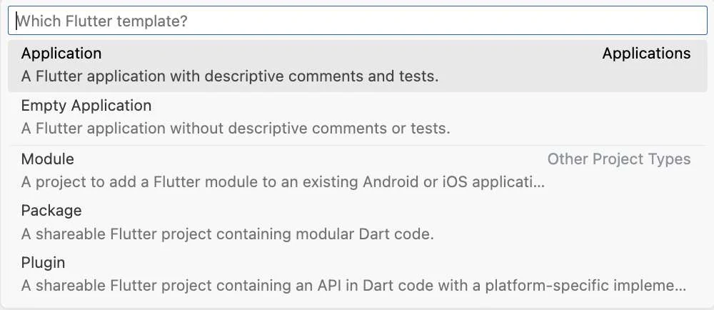
These are examples from the supplied textbook; VS Code labels and templates may differ by version.
flutter devices and verify browser installation.
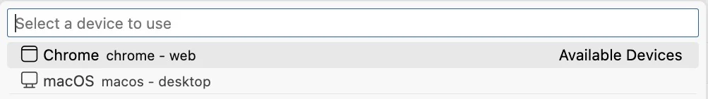
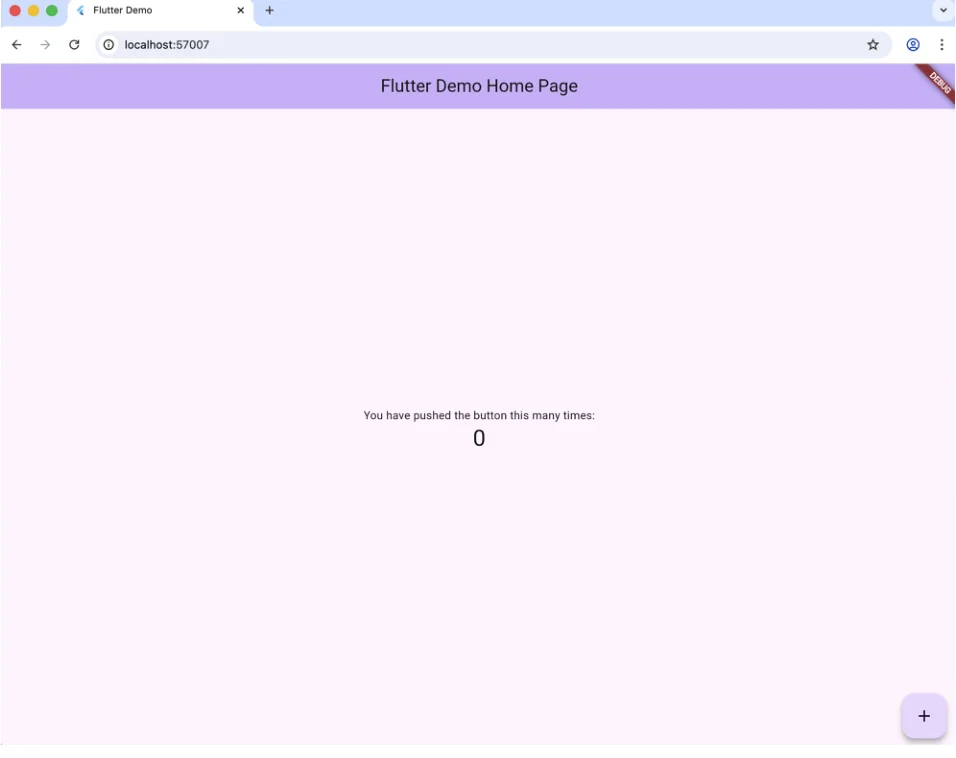
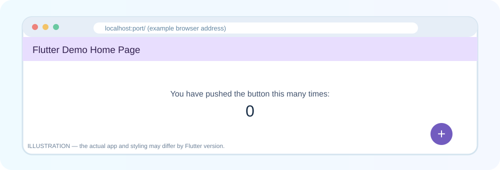
In a terminal opened in the parent project folder (not inside an existing Flutter project), you can generate and run the same starter app:
flutter create setup_check_appcd setup_check_appflutter run -d chromeIf choosing Edge on Windows instead, use flutter run -d edge. Run commands from the
project folder containing pubspec.yaml.
05-flutter-web-app.png
showing the real running Flutter app in Chrome/Edge. If possible, show VS Code beside it.
Do not submit the illustrative screenshot above.Your first Flutter app is running! In Session 05 we'll explore the generated files, explain the widgets, edit the UI, and use Hot Reload. For now, your environment has passed its first real test.
Submit five genuine screenshots captured on your computer. Use the checklist to make sure no required evidence is missing.
Windows: Win + Shift + S. Include commands and results. Hide private notifications, account information and unrelated device identifiers.
Put files in a folder such as Session02_SetupEvidence, then submit to your instructor's
designated course platform.
Submit the evidence you have, screenshot the error and briefly explain what worked, what failed, and the next step. An incomplete setup is not a reason to invent results.
Remember the tiny screen you explored while Flutter was downloading? Try these creative mini-challenges for a few extra minutes. No code or additional screenshots required.
Write a completely original greeting, choose the symbol that fits you, and try two different color palettes. Which combination feels best?
Switch between light and dark mode. Decide which makes your content easiest to read, and explain why to a classmate.
Use the Like and Tap me buttons, then choose Surprise me! How does the screen respond when you interact with it?
0 of 3 creative challenges checked
The playground was a visual simulation, not your actual Flutter program. Your real first app is the one you launched in Chrome or Edge and captured for Evidence 05. Dart syntax begins in Session 03.
This pathway explains Android Studio, the Android SDK and using a physical phone, including Xiaomi/Redmi/POCO. It is not required for the 120-minute core lab and does not replace the five web screenshots.
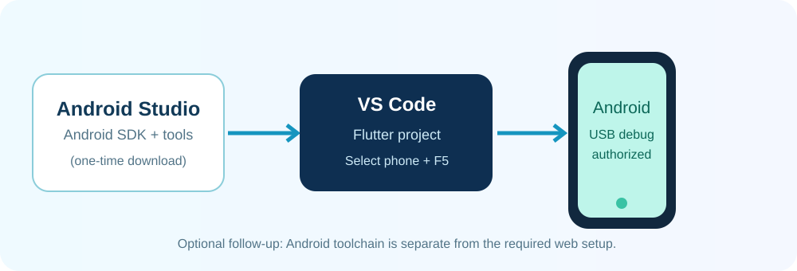
Android Studio provides the tools needed to build and run Flutter applications on Android devices. You can continue writing code in VS Code.
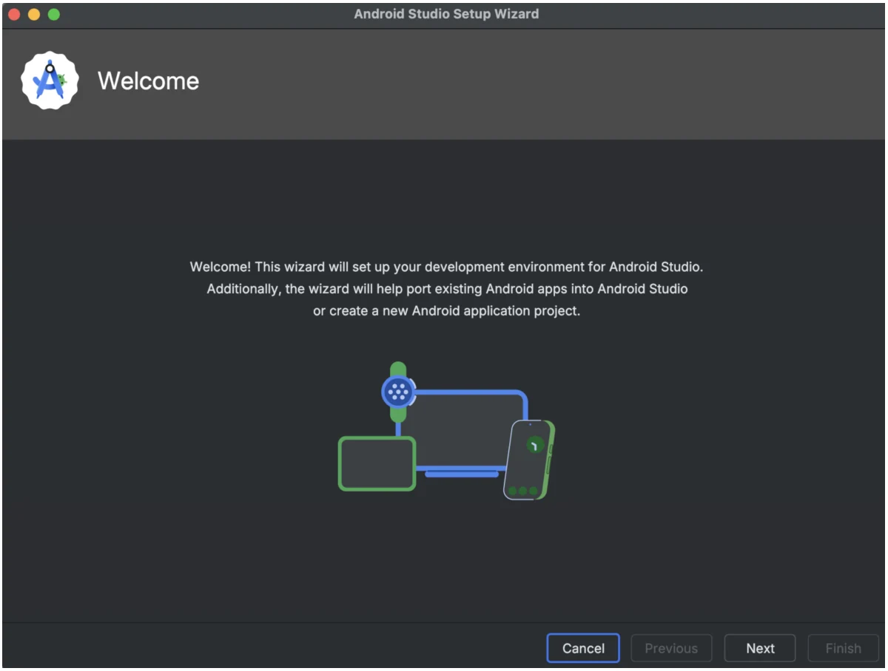
No, normally not. Android Studio includes JetBrains Runtime (JBR), a Java Development Kit used by Android development tools such as Gradle. Flutter normally detects it automatically.
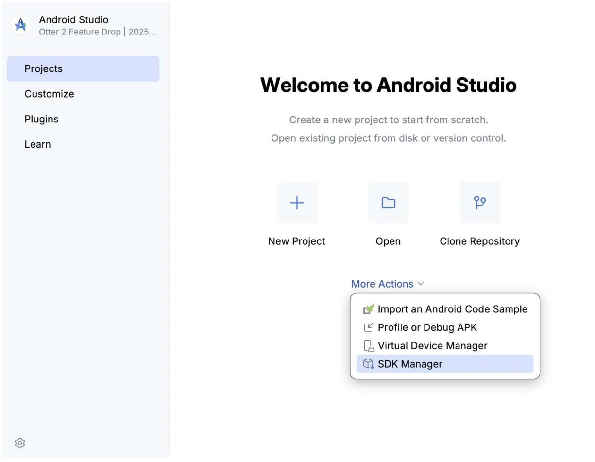
An Android SDK Platform provides the API libraries needed to compile applications for an Android version. This is different from the Flutter SDK.
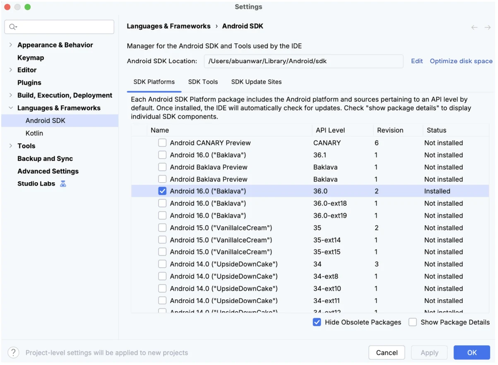
Open the SDK Tools tab. The tools provide the compiler-related utilities, device communication, debugging and other capabilities needed for Android development.
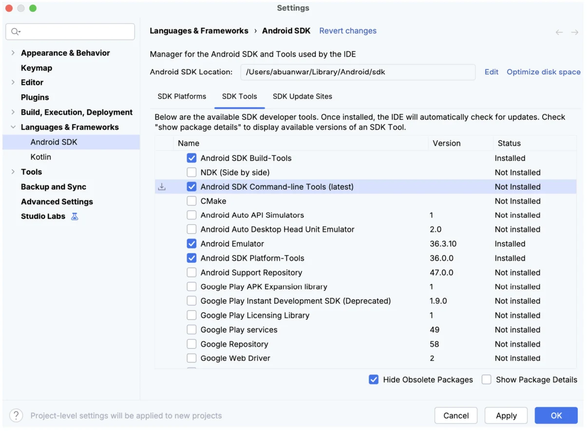
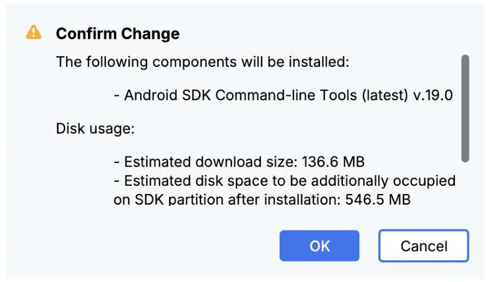
Return to the VS Code terminal and check which Android SDK and Java installation Flutter detects.
flutter doctor -vExpected: Flutter recognizes the Android toolchain. Review the detected Java version and Java binary path.
Android SDK packages have license agreements that must be accepted before building Android apps.
flutter doctor --android-licenses
Read the license prompts and accept the required terms.
Then run flutter doctor again.
An Android Emulator creates a virtual Android device on your computer. It is useful when you do not have a physical Android phone, but it requires more computer resources.
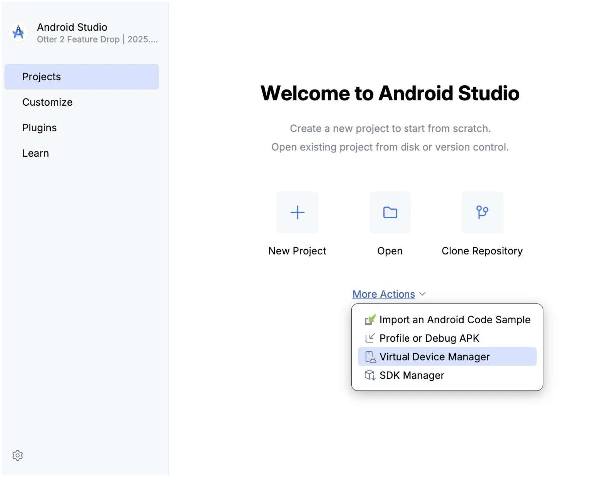
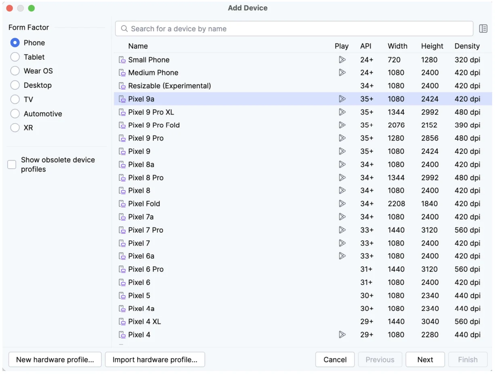
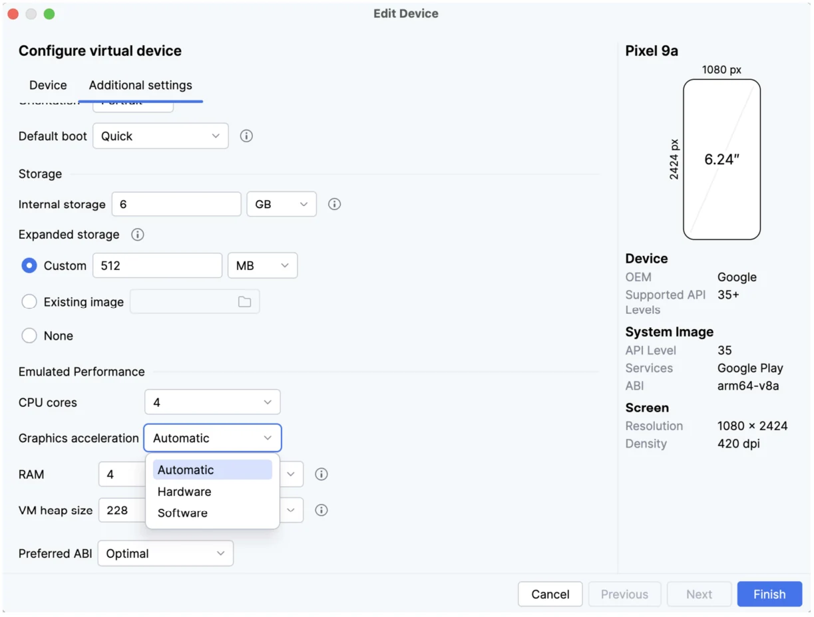
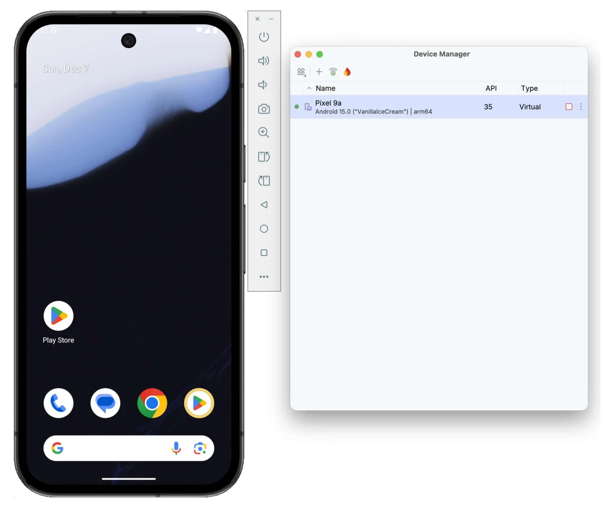
Open Settings → About phone → Software information (where available), tap Build number repeatedly until Developer options is enabled, then enable USB debugging. Menus can vary by Android version.
Open Settings → About phone → Detailed info and specs, tap OS/MIUI version repeatedly, then find Additional settings → Developer options → USB debugging. Names vary with firmware.
Xiaomi official guide ↗Read any on-phone warnings. You normally do not need to enable unknown security-sensitive switches such as USB debugging (security settings) or USB installation permissions unless an official model-specific workflow explicitly requires them.
flutter devices and look for an entry with an Android platform or your connected
phone.flutter devicesExpected: your Android device appears in the list. The device ID will be different on each computer.
Open setup_check_app in VS Code, select your connected Android device from the device
selector, then press F5. Or use this command with the actual ID from the
devices list:
flutter run -d YOUR_DEVICE_IDMake sure the counter app appears on the real phone. Android's first build may download additional Gradle dependencies and may need a good connection.
Work through these checks in order.
flutter doctor.flutter devices again.06-android-device.png: phone listed
by flutter devices. 07-running-on-phone.jpg: a photo or screenshot of the actual
app on your phone. Hide serial numbers or private information.